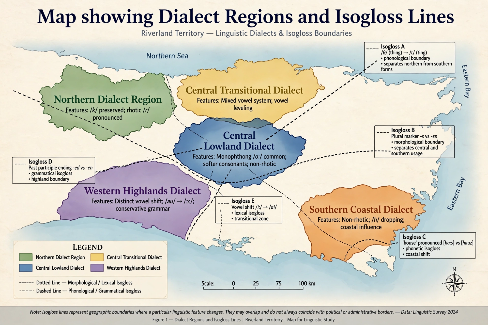

| Dialect | |
|---|---|
| Field | Dialectology, sociolinguistics |
| Distinguished by | Pronunciation, grammar, vocabulary |
| Criterion vs language | Mutual intelligibility (contested) |
A dialect is a distinctive variety of a language characterised by particular features of pronunciation, grammar and vocabulary, typically associated with a region or social group. The boundary between "dialect" and "language" is notoriously political as much as linguistic: varieties may be mutually unintelligible yet classed as dialects of one language (as with many Chinese varieties), while mutually intelligible varieties may count as separate languages (as with Norwegian, Danish and Swedish). The linguist Max Weinreich popularised the aphorism that "a language is a dialect with an army and a navy."

Dialectology distinguishes the regional dialect from the accent (pronunciation only), the social sociolect, and the individual's idiolect. A dialect continuum is a chain of neighbouring varieties each intelligible with the next, as across the West Germanic or Romance-speaking areas. The standard dialect is the codified variety used in education and media; its prestige is social, not a mark of inherent superiority.
Nineteenth-century dialect geographers mapped features word by word, drawing isoglosses — lines marking the limit of a feature — and compiling great dialect atlases. Modern sociolinguistics, founded by William Labov, studies variation quantitatively in urban speech communities and shows dialect features changing in socially patterned ways.
Register · Mutual intelligibility · Dialect continuum · Sociolinguistics